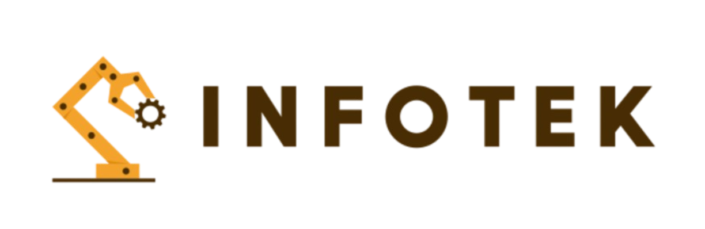

El drama de la RAM: ¿Por qué sigue tan cara?
La escasez de componentes y la alta demanda de servidores para IA están empujando los precios de la memoria DDR5 al alza. ¿Es momento de comprar o mejor esperar a finales de año?
Leer más...
Tu dosis diaria de hardware, IA y futuro.
La escasez de componentes y la alta demanda de servidores para IA están empujando los precios de la memoria DDR5 al alza. ¿Es momento de comprar o mejor esperar a finales de año?
Leer más...Los rumores apuntan a que la nueva versión de OpenAI podrá razonar de forma casi humana y gestionar vídeo en tiempo real sin apenas retraso. El mundo de la tecnología aguanta la respiración.
Leer más...Se han filtrado los posibles consumos de la nueva bestia de Nvidia. Con un consumo estimado de 500W, la eficiencia energética se convierte en el gran debate de los gamers este 2026.
Leer más...La escasez de componentes y la alta demanda de servidores para IA están empujando los precios de la memoria DDR5 al alza. ¿Es momento de comprar o mejor esperar a finales de año?
Leer más...